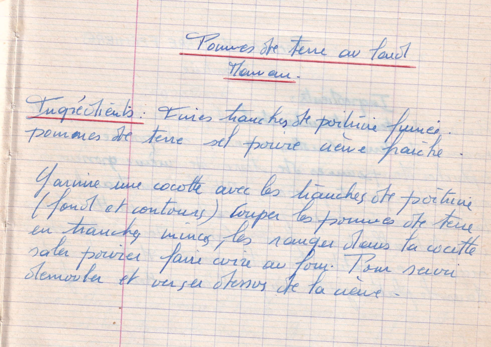

Pommes de terre au lard
Maman

LISTE DES INGREDIENTS
- Fines tranches de poitrine fumée
- Pommes de terre
- Sel, poivre
- Crème fraiche
PREPARATION
- Garnir une cocotte avec les tranches de poitrine (fond et contours)
- Couper les pommes de terre en tranches minces/li>
- Les ranger dans la cocotte
- Saler, poivrer
- Faire cuire au four
- Pour servir, démouler et verser dessus la crème